- 00 开篇词 你好，产品经理！你的未来价值壁垒在哪儿？.md.html
- 01 行业视角：产品经理眼中的人工智能.md.html
- 02 个人视角：成为AI产品经理，要先搞定这两个问题.md.html
- 03 技术视角：AI产品经理需要懂的技术全景图.md.html
- 04 过来人讲：成为AI产品经理的两条路径.md.html
- 05 通过一个 AI 产品的落地，掌握产品经理工作全流程.md.html
- 06 AI 模型的构建过程是怎样的？（上）.md.html
- 07 AI模型的构建过程是怎样的（下）.md.html
- 08 算法全景图：AI产品经理必须要懂的算法有哪些？.md.html
- 09 K近邻算法：机器学习入门必学算法.md.html
- 10 线性回归：教你预测，投放多少广告带来的收益最大.md.html
- 11 逻辑回归：如何预测用户是否会购买商品？.md.html
- 12 朴素贝叶斯：让AI告诉你，航班延误险该不该买？.md.html
- 13 决策树与随机森林：如何预测用户会不会违约？.md.html
- 14 支持向量机：怎么预测股票市场的涨与跌？.md.html
- 15 K-means 聚类算法：如何挖掘高价值用户？.md.html
- 16 深度学习：当今最火的机器学习技术，你一定要知道.md.html
- 17 模型评估：从一个失控的项目看优秀的产品经理如何评估AI模型？.md.html
- 18 核心技能：产品经理评估模型需要关注哪些指标？.md.html
- 19 模型性能评估（一）：从信用评分产品看什么是混淆矩阵？.md.html
- 20 模型性能评估（二）：从信用评分产品看什么是KS、AUC？.md.html
- 21 模型性能评估（三）：从股价预测产品看回归算法常用的评估指标.md.html
- 22 模型稳定性评估：如何用PSI来评估信用评分产品的稳定性？.md.html
- 23 模型监控：产品经理如何建设算法模型监控指标体系？.md.html
- 24 推荐类产品（一）：推荐系统产品经理的工作职责与必备技能.md.html
- 25 推荐类产品（二）：从0打造电商个性化推荐系统产品.md.html
- 26 预测类产品（一）：用户复购意向预测的底层逻辑是什么？.md.html
- 27 预测类产品（二）：从0打造一款预测用户复购意向的产品.md.html
- 28 预测类产品（三）：从0打造一款“大白信用评分产品”.md.html
- 29 自然语言处理产品：从0打造一款智能客服产品.md.html
- 30 AI产品经理，你该如何提升自己的价值？.md.html
- 31 AI产品经理面试，这些问题你必须会答！.md.html
- 春节加餐1 用户增长模型：怎么利用AI技术判断新渠道性价比？.md.html
- 春节加餐2 一次答疑，带你回顾模型评估的所有基础概念.md.html
- 期中周测试题 ，你做对了吗？.md.html
- 期中答疑 AI产品经理热门问题答疑合集.md.html
- 结束语 唯一不变的，就是变化本身！.md.html
- 捐赠
25 推荐类产品（二）：从0打造电商个性化推荐系统产品
你好，我是海丰。
假设，你是一家电商平台公司的产品经理，公司经过一年多的供应链打造和用户运营的投入，业务已经发展到了一个高速增长的阶段。
但问题也随之暴露了出来：之前产品首页是人工配置选品的，每个用户在浏览 App 的时候，看到的都是千篇一律的商品。这种无法体现用户对于商品兴趣的偏好情况，不但削减了用户的体验，也没法让供应商满意，因为随着接入的供应链多了起来，供应商也希望自己的商品能有更多的曝光。
为了尽快解决这个问题，老板决定让你牵头打造一个个性化电商MVP推荐系统 （Minimum Viable Product，最小可行性产品）。已知，推荐系统的建设可以分为 4 个重要的阶段，分别是需求定义、数据准备、技术实现和评价标准。
那么，每个阶段产品经理都要做些什么呢？接下来，我就和你详细说说。
需求定义
在需求定义环节，我们最重要的工作就是产出需求文档。具体来说，产品经理需要做的有3件事，分别是交代需求背景、描述交互逻辑，以及明确预期目标。下面，我们一一来说。
1. 构建需求背景
在需求背景部分，我们要重点交代清楚为什么要建设推荐系统，让协同部门能够理解背景，和我们对齐这个项目的价值。一般来说，我们会和业务方进行频繁沟通，发掘他们最核心的诉求。那么，今天这个例子中的核心诉求其实就是要展现所有用户对商品的偏好，避免“千人一面”。
2. 描述交互逻辑
接下来，我们要对推荐系统的交互逻辑进行描述，主要包括描述用户的动线流程、模型诉求和产品功能上的逻辑。
因为我们这次构建的是MVP推荐系统，所以不需要通过算法模型来实现所有的推荐逻辑，而是分成两部分，一部分通过算法进行推荐，另一部分通过运营系统配置进行推荐。
那再说回到这个推荐系统产品的交互逻辑上。
首先，当用户进入商品主页的时候，推荐系统会检查是否已存在当前用户的画像信息。如果存在就获取用户的商品偏好标签，执行商品召回的算法逻辑，如果不存在就把运营系统配置的商品数据展示给用户。
然后进入商品召回模块，由于只需要打造一个 MVP 的推荐系统，因此我们只设计一种召回策略就可以了，如“基于协同过滤的召回策略”。这样，推荐系统就不涉及多路召回融合的问题，在产品需求中也就不用涉及“排序阶段”的需求了。
所以我们直接进入“调整阶段”。这一阶段，推荐系统需要通过规则，将算法召回的商品列表和运营系统配置的商品列表进行融合。常见的运营配置有，商品在第一周上新期内需要在展示列表中置顶等等。
最终，推荐系统会将融合后的商品列表展示给用户。完整的交互逻辑如下，你可以看看。
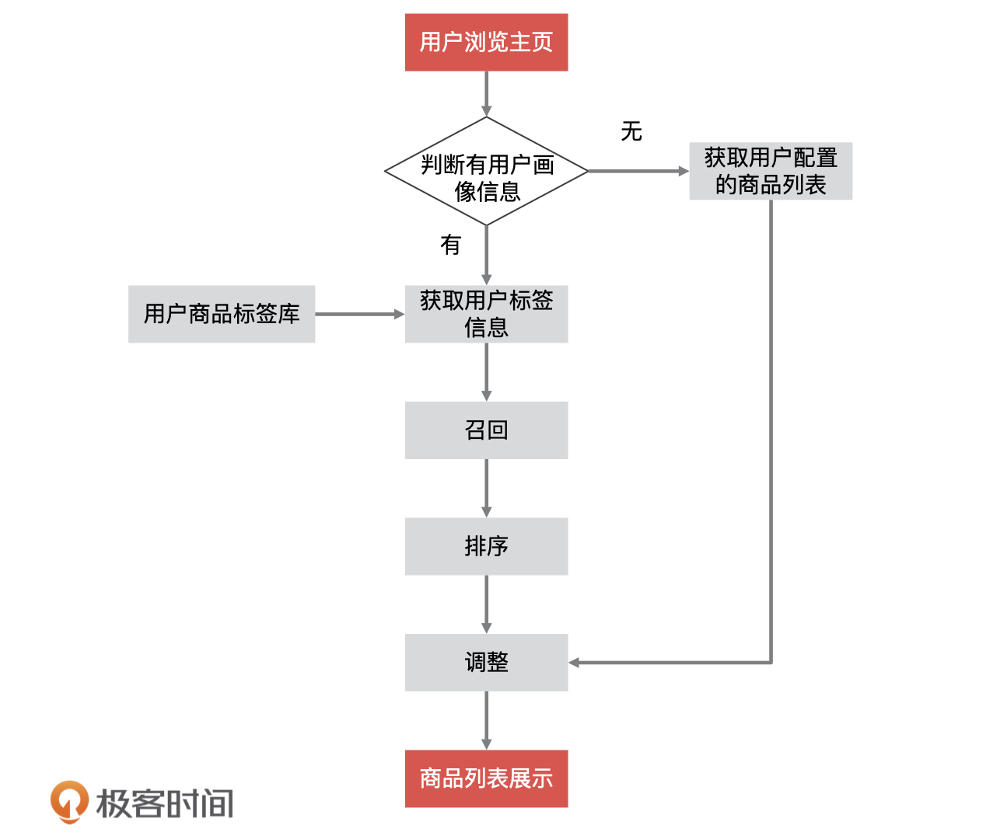
3. 制定预期目标
最后就是制定电商推荐系统的预期目标了，这个目标是根据业务的实际情况而设定的。有了目标就要有衡量目标的指标， 虽然大多数推荐系统的衡量指标都是 CTR，但我建议你从业务的建设阶段来设定衡量指标，就像我上节课讲的那样。这里，因为我们的业务发展属于成熟阶段，所以设定的衡量指标为 CVR。
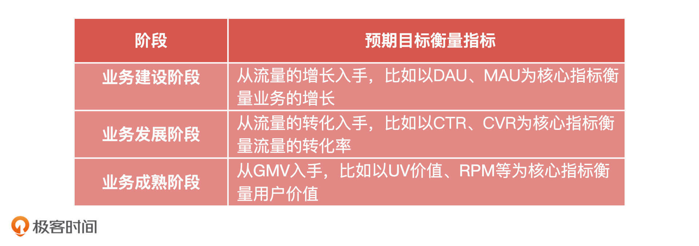
总的来说，产品经理要能够清晰地设计需求，需求定义要明确需求背景、描述交互逻辑，以及制定预期目标，那么如何做才是清晰的设计需求呢？我为你准备了一份推荐系统需求模板，你可以作为参考。
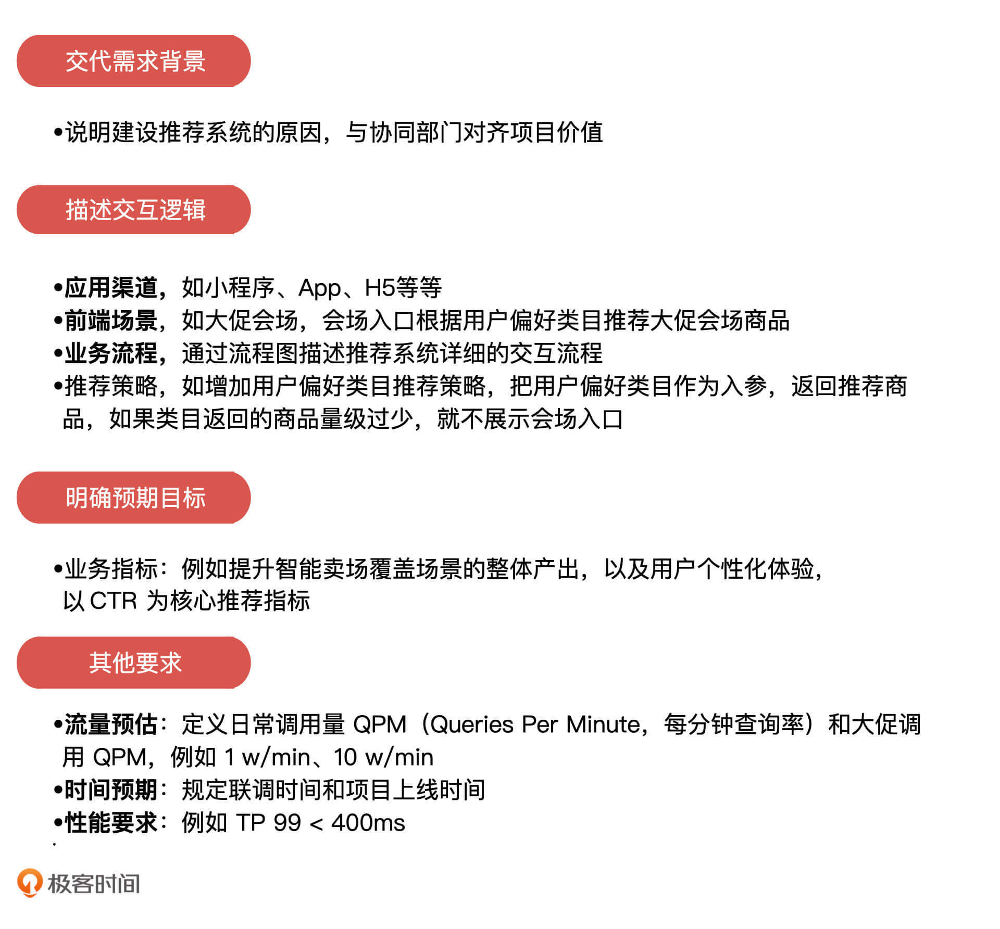
数据准备
接下来是数据准备阶段。在推荐系统中，如果用户在某个环境下对某个商品做了某种操作，我们就认为这个操作表达了用户对这个商品的兴趣偏好。推荐系统要做的就是挖掘这个偏好，然后给这个用户推荐相同偏好的其他商品。因此，数据对于推荐系统是非常重要性。我们要做到的就是在搭建推荐系统之前，完成大量数据的收集和整理工作。
这些数据的来源一般包含三类：业务数据、埋点日志和外部数据。并且每个来源的数据都有着详细的数据分类，这些数据会应用于机器学习的离线预估模型训练和实时模型预估计算。具体内容我都总结在了下面的表格中，你可以看一看。
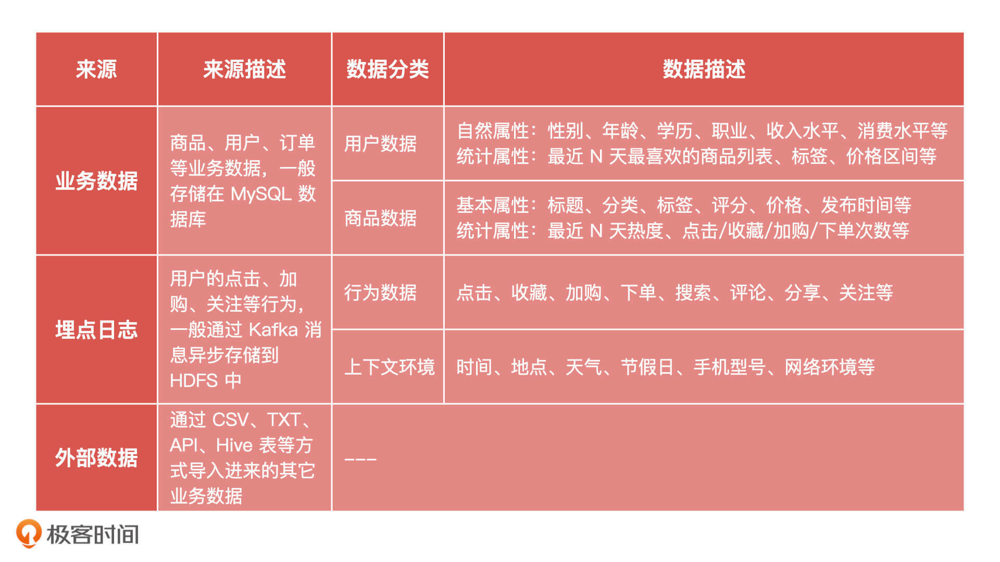
像是“用户数据”、“商品数据”和“上下文环境数据”本来就是存在于数据库中的，产品经理只需告诉算法同学数据源在哪里即可，后续算法同学会自行抽数。我们唯一提前要进行收集的就是用户的前端埋点日志，如果系统之前没有做过埋点，那么势必会影响推荐系统的准确性。
因此，在搭建推荐系统之前，我们要通过埋点尽可能地收集用户的前端行为日志。
那么问题来了，我们都需要埋哪些数据，把它们埋在哪些页面呢？这需要产品经理根据自己对业务的理解，整理出一套页面埋点文档，为算法同学提供数据支持。虽然根据业务的不同，具体的埋点策略会有差别，但我还是根据经验梳理出了一些用户行为与商品信息的数据埋点字段，供你参考。
首先是用户行为数据埋点字段：
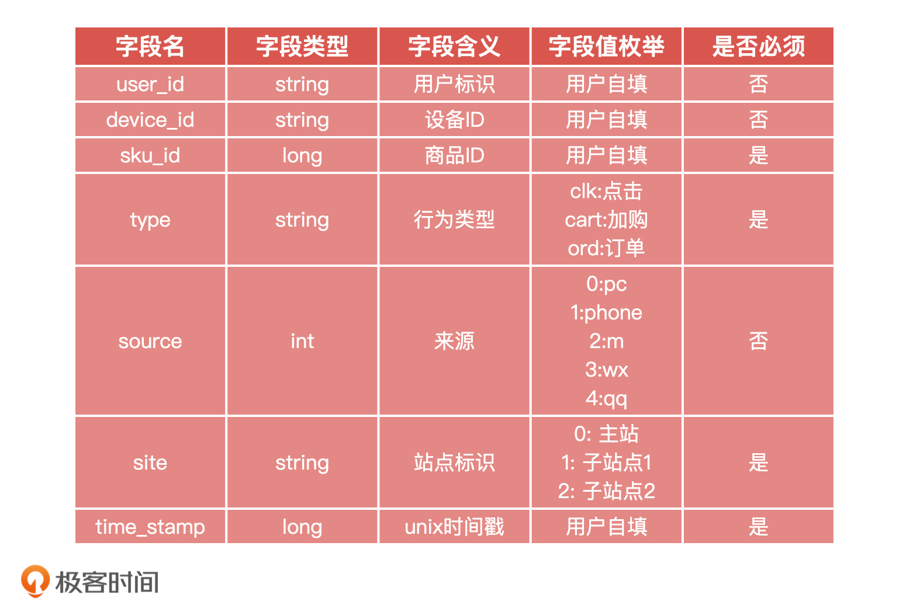
然后是商品信息数据埋点字段：
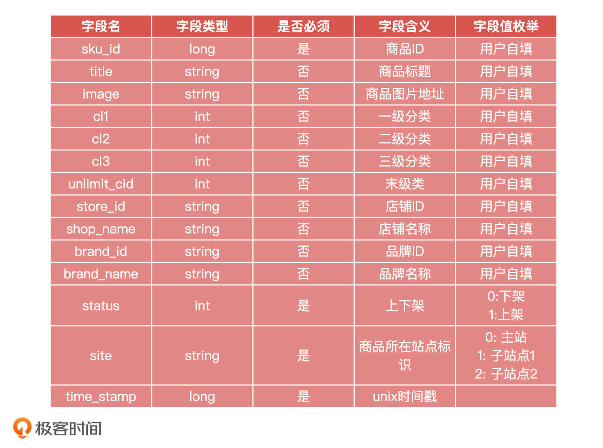
有了数据之后，算法同学就可以根据数据建立特征工程，然后我们就可以进入到模型构建的环节了。
技术实现
从项目管控上来看，在推荐系统的项目建设过程中会涉及两波技术团队，分别是算法团队和工程团队，他们是并行进行的。 算法工程师在构建模型的同时，研发工程师也在进行系统功能的开发，最终系统工程与算法模型会通过 API 接口进行通信，这需要双方提前约定好接口协议。因此作为产品经理，我们除了要关注算法同学的模型构建，同时也要关注推荐系统工程的整体设计。
具体来说，对于系统工程的整体设计，产品经理要关注推荐系统进行一次完整推荐会涉及哪些系统模块，它们和算法模型是怎么交互的，数据流向什么样，产品的关键逻辑是在哪个模块中实现的。
下面，我们就来看下工程系统和算法模型的数据架构图，图中的箭头都是数据流向，方向是从左往右。
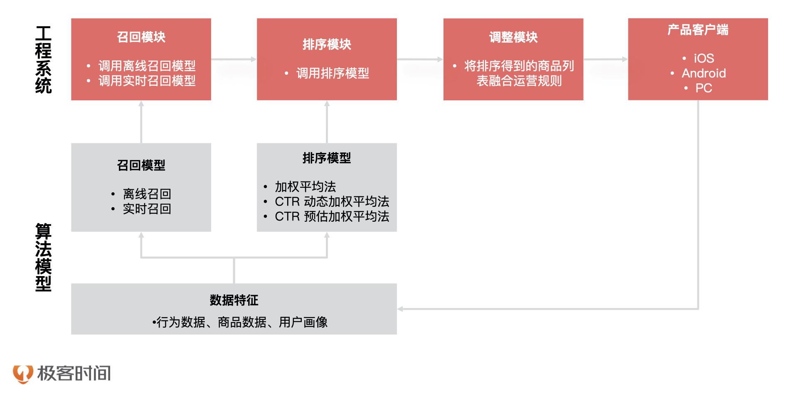
从架构图中，我们可以看到工程系统在进行推荐的时候，先后经过3个模块分别是召回模块、排序模块和调整模块，每个模块都调用了算法模型对应训练好的机器模型提供的服务。
在召回模块中，系统调用了算法模型的“离线召回模型”和“实时召回模型”，它们都做了哪些事儿呢？
首先是实时召回，实时召回模型根据历史的用户行为数据，集合当前用户实时的浏览行为，计算并更新用户召回商品的列表信息。实时召回的计算是秒级运算，比如你在京东 App 上搜索华为手机后，Feed 流就会推荐给你很多其他品牌手机。
离线召回则是每天通过定时脚本触发模型的计算，如全量更新用户的偏好信息，计算热度榜单等等不要求实时性的数据，这些数据会被存储到数据库中。这样，当工程系统调用某个用户的召回商品列表的时候，推荐系统直接查询数据库就能得到，不需要再计算一遍，从而提高了系统性能。
说完了召回模块，下一个是排序模块。 排序模块就比较好理解了，推荐系统会直接调用模型提供的排序服务。这里我们需要注意的是，在系统工程中排序服务可以通过规则（如加权平均、CTR 动态加权平均）的方式实现，也可以基于机器学习模型的 CTR 预估方式实现。至于，具体选择哪种技术策略，我们根据业务现状和技术驾驭能力来决策就可以。
然后是调整模块，调整模块是对排好序的商品列表进行运营策略上的调整，它和业务规则强相关，我们就不做过多介绍了。最后，推荐系统会把最终的商品列表返回给产品客户端。
这样，整个工程上的数据流向我们就讲完了，但这只是一个最为简单的 MVP 推荐系统的构建。在实际情况下，技术同学还需要考虑很多非功能性的需求，比如系统响应时长、系统稳定性等等，但产品经理的重点还是要放在“召回”、“排序”和“调整”上面。
评价标准
最后，也是业务方最为关注的，那就是如何评估推荐系统给业务提升了多少效果。评估方法并不难，产品经理可以通过 AB 测试的方式进行评估，推荐系统要想做 AB 测试，有三点我们必须要注意：
第一，推荐系统的工程代码要提前准备两套实现方案，一套千人一面，一套千人千面；
第二，推荐系统要能进行 AB 测试的切量配置，也就是多少流量流向改造前的系统，多少流量流向改造后的系统，当然这个功能要让系统工程研发同学给予支持；
第三，为了查看 AB 测试的效果，对比 CTR、UCTR、转化率等指标，我们要生成最终的效果统计报表。但在 AB 测试切量的时候，我们要注意打上流量标志位，标识是哪种方案。这样在统计报表的时候，我们才能分别计算指标，进而比较推荐系统在原有系统之上做到了多少提升。
除了这三点，我也把做 AB 测试时常见的几个错误总结在了下面，你在做AB测试的时候要尽量避免。
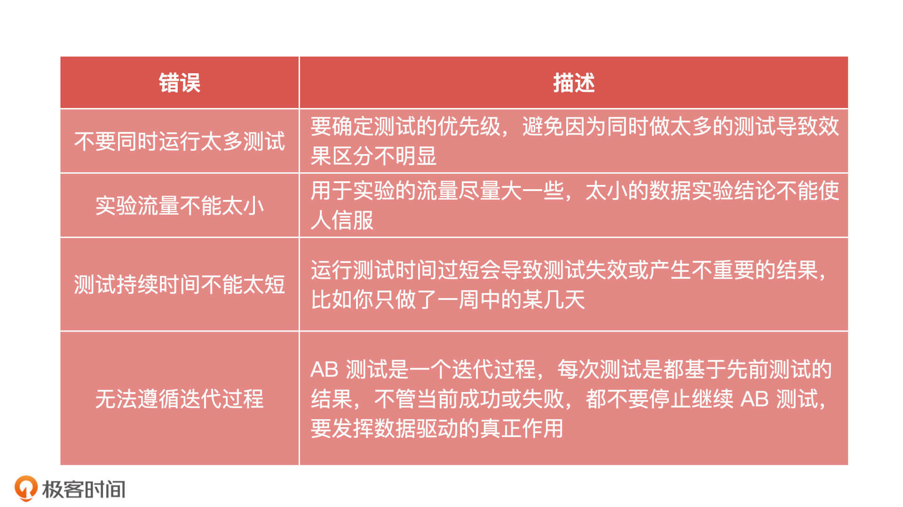
这些其实还不是我们做AB测试的难点，实际的难点在于产品经理对指标的分析过程，以及最终给出的迭代计划，下面我们就来详细讲讲。
因为我们的业务比较成熟，并且业务方的 PKI 是 GMV（Gross Merchandise Volume，成交总额），所以我们选用了 CVR 作为推荐系统的衡量标准。CVR的计算方式是转化数/点击数，也就是最终点击商品并且购买的转化率，它通常在广告领域用的比较多。这个指标和最终的 GMV 直接相关，所以也受到业务方的重点关注。那么，对于得到的指标，我们该怎么分析呢？
下表就是推荐指标的汇总，我们按照 0~3、3~6、6~9 对商品进行了分段。
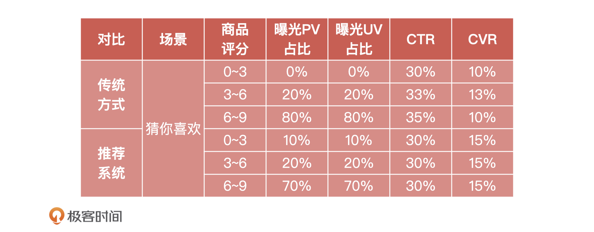
对比之下，我们可以看到，“传统方式”的 0~3 分的长尾商品没有曝光，这是因为我们之前一味地追求 GMV，所以运营同学对于低评分的长尾商品不做展示，把所有资源都倾向于头部品牌商的商品，让中小商家在平台上无法生存。因此，从长远的角度来看，一味的追求GMV并不健康。
除此之外，在对于推荐系统的迭代计划中，产品经理至少还要对不同人群、不同位置设置不同的评价指标，最后再综合所有的评估指标来优化整体数据指标。具体操作时的注意事项，我都总结在了下面的表格中，你可以看看。
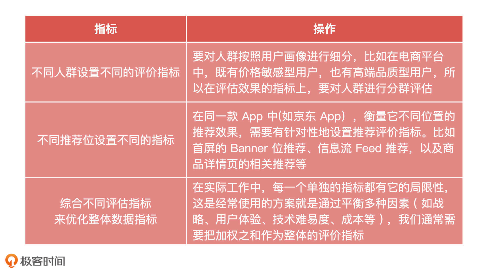
小结
今天，我带你一起走完了一个个性化MVP推荐系统构建的全流程。这其中，产品经理需要关注的内容可以从三方面概括，分别是能力、技术和岗位。
能力可以总结为三点：
第一，我们要能够清晰地设计需求：需求定义要明确需求背景、功能描述，以及预期的收益。- 第二，我们要能够理解数据：在推荐系统的数据准备阶段，产品经理要关注用户前端的埋点日志，提前设计埋点，以及给研发工程师提需求收集行为日志。- 第三，我们要能够对通过 AB 测试来评估推荐系统的效果，然后做出分析再给予持续的迭代计划。
关于技术，我们要重点掌握推荐系统中召回和排序模块的策略。 这不仅包括我们这节课说的，工程系统进行一次完整推荐的时候各个系统模块的工作原理、交互逻辑，还有我们上节课讲的常用协同过滤算法和相似度算法的原理。
关于岗位，无论你要转型成为哪类产品经理，都要时刻关注目前互联网公司中的招聘。对于推荐产品岗位，除了要知道我们今天讲的内容，你还要注重积累推荐策略、推荐效果数据分析，以及产品的优化升级方面的经验。我在下面列举了一个市场上推荐产品经理的 JD，你可以参考下。
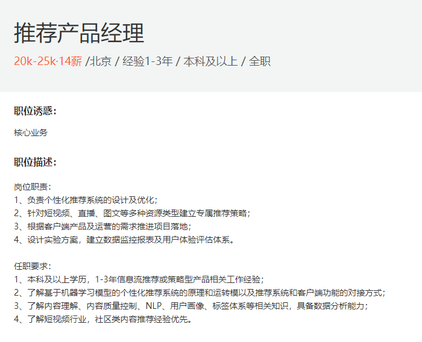
最后，今天的内容比较多，为了帮助你理解，我梳理了一个知识脑图，你可以利用它查缺补漏。
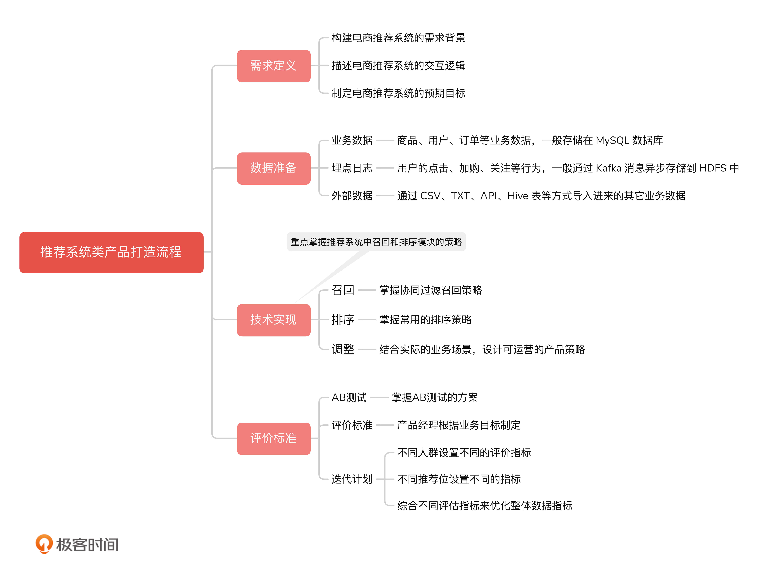
总的来说，推荐系统是一个需要长期根据效果进行迭代的产品，产品经理要能做到以“Zoom Out”的眼光看待系统的长远发展。因为极有可能，系统在上线初期的效果，反而不如传统运营的手动配置策略，但是作为产品经理，我们要有信心，并且要能通过持续的 AB 测试分析和迭代来逐步优化它的最终效果。
课后讨论
结合你所处的业务场景，对于推荐系统的评价标准，你觉得哪些评价方法更为适合？
欢迎把你的答案写到留言区和我一起讨论，我们下节课见！
© 2019 - 2023 Liangliang Lee. Powered by gin and hexo-theme-book.